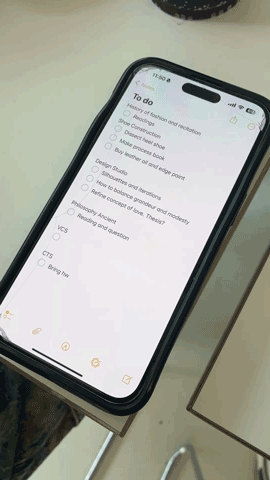

i use the default apple calendar app on my phone.
usually the night before, i would make a mental list of everything for the next day. and then when it's done, i forget about it.

i use it to note down important events like birthday reminders or machine orientations.
my phone is always on me, so it's more convenient to keep everything consolidated digitally. i might not always have a notebook on me too. but, i always have three notebooks specifically dedicated for school that i carry around.
i also use my notes app to make to-do-lists at times, but i never check it off - i just delete it after it's done. i put all my tasks into one notes document, which i also separate by categories, but i don't update it often.
to me, the important part is that i am typing it down, as it helps me remember more.
they're all for my classes, each of them subject specific. i don't usually write tasks and deadlines into them, i prefer to keep them separate.
i also have an everything notebook where i would write poetry, draw some doodles, and some school notes maybe - honestly, school notes are everywhere.